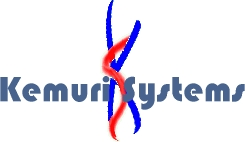

I was young. I had long(er) hair. The only thing that didn’t change was my goatee.. Thanks to Sander, a friend in Belgium, we recovered the older logo.

1998: The original fails, I must have it on some disks. I think I made this while in Le Mans (France), using some program on Windows. Note that ‘kemuri’ is Japanese for ‘smoke’, so the S somehow weaves along the K.
2001: Or was it 2002.. Revamped the logo so it was easier to print on paper. You know, making invoices. Not sure where I got the idea from, but maybe it was from VA Linux logo (had a rack mountable server from them). I’m sure this one was made in a basement in Brussels.
Comments
Hey Geert,
Jij kent me wss niet meer maar ik herinner me je logo en de naam Kemuri Systems nog , zelfs na 13 jaar… :-) We zaten samen in hetzelfde jaar op Erasmus en je presenteerde je bedrijf en je logo tijdens een presentatieoefening voor “Nederlands” :-)
De naam Kemuri en het logo zijn op één of andere manier altijd blijven hangen
Take care en succes met de zaak
Tony